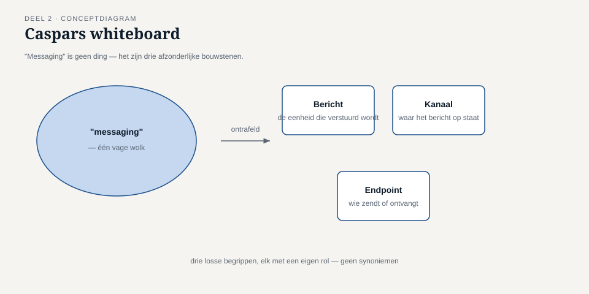
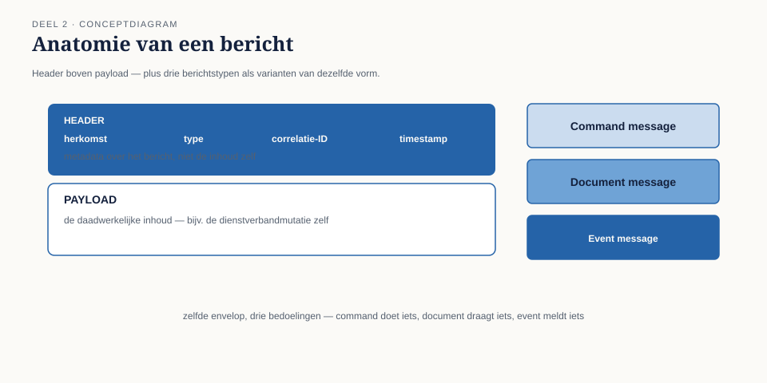
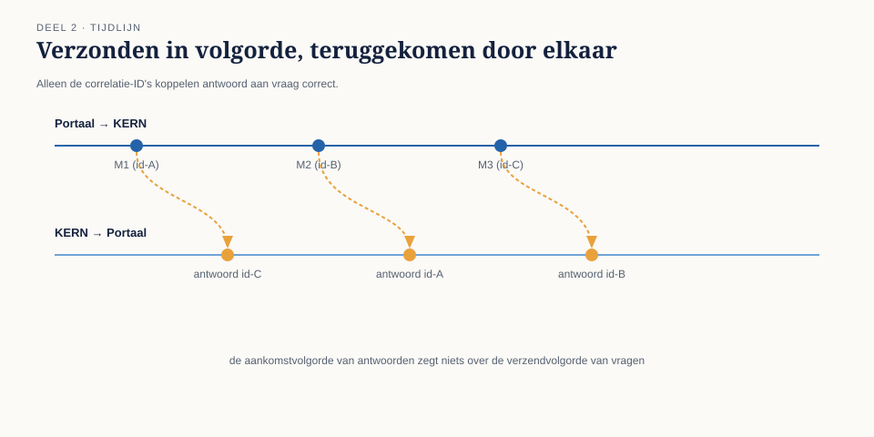

Deel 2 — Messagingfundamenten: kanaal, bericht, endpoint
Reader · Ductus-cursus Enterprise Integration Patterns · niveau 1 (fundament) · deel 2 van 10
2.0 Drie woorden die Caspar niet uit elkaar had
Twee weken na het incident van deel 1 presenteerde Caspar zijn eerste ontwerp voor de ontkoppeling van Werkgeversportaal en KERN. Op het whiteboard stond één rechthoek met de tekst "message queue" en twee pijlen erheen. Zijn architectuurboard stelde drie vragen die hij geen van drieën scherp kon beantwoorden:
Wat staat er precies ín die rechthoek — is dat één ding, of zijn dat meerdere dingen?
Als het Werkgeversportaal en het Nabestaandenloket allebei iets met dezelfde mutatie moeten doen, is dat dan dezelfde rechthoek of twee?
Waar in KERN wordt straks de code aangepast — en waar niet?
Caspar had, zoals hij zelf toegaf, "een wolk getekend en er messaging op geschreven". Dat is een veelgemaakte fout bij de eerste stap richting asynchrone integratie: het woord "messaging" wordt gebruikt als één concept, terwijl het uit drie onderscheiden bouwstenen bestaat die stuk voor stuk eigen ontwerpbeslissingen vergen.
Dit deel maakt die drie bouwstenen expliciet: het kanaal, het bericht, en het endpoint. Alle patronen die in niveau 1 en 2 volgen, zijn combinaties en verbijzonderingen van deze drie.

2.1 Het kanaal
Een message channel is een virtuele pijp tussen twee of meer applicaties waarlangs berichten stromen. "Virtueel" is hier het sleutelwoord: het kanaal is geen fysieke draad, het is een logische afspraak — een naam, een adres, een wachtrij of topic — waarover zender en ontvanger het eens zijn.
Drie eigenschappen van een kanaal bepalen vrijwel elke volgende ontwerpkeuze in deze cursus:
Een kanaal draagt precies één soort bericht. Niet omdat de techniek dat afdwingt — de meeste brokers laten willekeurige inhoud toe — maar omdat een kanaal zonder deze discipline onbruikbaar wordt. Als het "mutatiekanaal" zowel dienstverbandmutaties als adreswijzigingen als foutmeldingen bevat, moet elke ontvanger eerst uitzoeken wat voor bericht dit is voordat hij weet hoe te reageren. Dat is precies het soort vermenging waar Caspars "wolk" aan leed.
Een kanaal heeft een eigenaar van het contract, niet van de techniek. Er moet iets of iemand zijn die vastlegt wat er wél en niet over dit kanaal mag — vergelijkbaar met een API-contract, maar dan voor een berichtformaat in plaats van een resource. Zonder die eigenaar verwatert een kanaal binnen een jaar tot een verzameling losse afspraken die niemand meer overziet.
Een kanaal is punt-tot-punt of publish-subscribe, nooit allebei tegelijk voor dezelfde toepassing. Bij point-to-point haalt precies één ontvanger elk bericht van het kanaal — geschikt voor werk dat maar één keer gedaan moet worden, zoals "verwerk deze mutatie". Bij publish-subscribe ontvangt élke geabonneerde ontvanger een kopie van elk bericht — geschikt voor gebeurtenissen die meerdere partijen aangaan, zoals "er is een mutatie geweest". Dit onderscheid is zo fundamenteel dat het in deel 6 een volledig eigen paragraaf krijgt; voor nu is het genoeg om te weten dat de keuze vroeg in het ontwerp gemaakt moet worden, want zij bepaalt de hele verdere vormgeving.
Kernzin 2 van de cursus: een kanaal is een contract met een naam, niet een technisch detail — behandel het ontwerp ervan met dezelfde zorgvuldigheid als een API-contract.
2.2 Het bericht
Een message is de eenheid die over een kanaal reist. Elk bericht bestaat, ongeacht techniek of formaat, uit twee delen die je altijd afzonderlijk moet ontwerpen:
De header bevat metadata over het bericht: waar komt het vandaan, wat voor soort bericht is dit, hoort het bij een lopend gesprek (zie 2.4, correlatie), wanneer is het verzonden, hoe lang is het geldig. De header is voor de infrastructuur en voor routeringslogica — niet voor de inhoud van de zaak zelf.
De payload (body) bevat de eigenlijke inhoud: bij Meridiaan bijvoorbeeld het BSN-gehashte deelnemersnummer, het type mutatie, de gewijzigde velden.
Dit onderscheid is niet decoratief. Een router die op inhoud beslist (zie deel 4) moet dat idealiter doen op basis van header-velden, niet door de hele payload te moeten inlezen en interpreteren — anders is elke component in de keten gedwongen het volledige berichtformaat te kennen, ook onderdelen waarmee hij niets doet. Dat vergroot koppeling precies op de plek waar messaging die juist moest verminderen.
Drie berichtstypen, drie bedoelingen.
| Type | Bedoeling | Voorbeeld bij Meridiaan |
|---|---|---|
| Command message | "Doe dit" — een expliciete opdracht aan één verantwoordelijke ontvanger | "Verwerk deze dienstverbandmutatie" naar KERN |
| Event message | "Dit is gebeurd" — een feit, zonder te voorschrijven wat de ontvanger ermee doet | "Dienstverband is gewijzigd" naar wie er ook maar in geïnteresseerd is |
| Document message | "Hier zijn gegevens" — een dataoverdracht zonder opdracht én zonder gebeurtenis-connotatie | Een volledig deelnemersdossier ten behoeve van een rapportage |
Het onderscheid tussen command en event is de belangrijkste van de drie, en de meest verwaarloosde in de praktijk. Een command heeft precies één logische ontvanger die verantwoordelijk is voor de uitvoering — ook als er technisch meerdere systemen naar luisteren, is er één die "ja" of "nee" mag zeggen. Een event heeft geen enkele ontvanger die iets verplicht is te doen; het feit is gebeurd, punt, en het is aan elke luisteraar zelf om te bepalen of het relevant is.

Caspars eerste ontwerpfout, bij het navragen, bleek precies hier te zitten: zijn "mutatiekanaal" droeg zowel commands (verwerk dit) als events (dit is gewijzigd) door elkaar, zonder dat een header-veld dat onderscheid maakte. Het Nabestaandenloket, dat alleen in het event geïnteresseerd was, moest elk bericht openen om te zien of het iets met hem te maken had.
2.3 Het endpoint
Een message endpoint is de plek waar een applicatie het kanaal raakt — het stukje code dat verantwoordelijk is voor het versturen naar, of ontvangen van, een kanaal. Endpoints zijn de grens tussen "applicatielogica" (wat KERN inhoudelijk doet met een mutatie) en "messaginglogica" (hoe die mutatie het kanaal op- en afkomt).
Dit onderscheid is waarom deel 2 relevant is voor de vraag die het architectuurboard aan Caspar stelde: waar in KERN wordt straks de code aangepast? Het antwoord hoort te zijn: uitsluitend in het endpoint, nooit dieper in de applicatielogica. Als de verwerkingslogica van KERN zelf moet weten dát er een kanaal is, ontstaat precies de starre koppeling die WGP 2.0 fataal werd — alleen nu met een wachtrij ertussen in plaats van een directe aanroep.
Een goed ontworpen endpoint heeft daarom twee eigenschappen:
Het kent het kanaal, de applicatielogica kent het endpoint. KERN roept niet "stuur dit bericht naar kanaal X" aan, maar "verwerk deze mutatie" — het endpoint vertaalt dat intern naar het plaatsen op een kanaal. Andersom: het endpoint roept niet rechtstreeks diep in KERN's domeinlogica, maar levert een binnengekomen bericht af op een punt dat de applicatie zelf bepaalt.
Het is vervangbaar zonder de applicatielogica te raken. Als Meridiaan volgend jaar van de ene brokertechnologie naar de andere overstapt (een reëel scenario, zie de Toolbijlage), zou dat een endpoint-aangelegenheid moeten zijn, niet een herbouw van KERN's mutatieverwerking.
Deze twee eigenschappen samen zijn de reden dat "messaging toevoegen" in een bestaand systeem zelden een kwestie is van "een bibliotheek importeren" — het vergt een bewuste laag tussen applicatie en kanaal, ook als die laag klein is.
2.4 Correlatie: hoe een antwoord zijn vraag terugvindt
Eén probleem is met kanaal, bericht en endpoint alleen nog niet opgelost, en het is precies het probleem waar het Werkgeversportaal in deel 1 tegenaan liep: als een gebruiker een mutatie indient en later wil weten of die gelukt is, hoe weet het systeem welk antwoordbericht bij welke oorspronkelijke vraag hoort?
Het antwoord is een correlation identifier: een uniek kenmerk dat het aanvraagbericht meekrijgt in de header, en dat het antwoordbericht overneemt. Zonder dit kenmerk kan een ontvanger van een antwoordkanaal niet vaststellen welk van de mogelijk honderd openstaande verzoeken dit antwoord beantwoordt.
Dit lijkt een detail maar is een van de meest onderschatte ontwerpbeslissingen in messaging: vergeet je een correlatie-ID, dan is asynchrone communicatie ronduit onbruikbaar zodra er meer dan één bericht tegelijk onderweg is — en dat is bij Meridiaan, met honderden mutaties per uur, vanaf dag één het geval.

2.5 Hoe de drie bouwstenen samen Caspars ontwerp corrigeren
Terug naar het whiteboard. Met kanaal, bericht en endpoint uit elkaar getrokken, wordt Caspars ontwerp opnieuw tekenbaar — nog steeds zonder brokertechnologie te kiezen, want dat is toolneutraal en komt in de Toolbijlage.
- Eén mutatiekanaal, point-to-point, uitsluitend command messages ("verwerk deze mutatie") — precies één ontvanger: KERN.
- Eén apart mutatie-gebeurd-kanaal, publish-subscribe, uitsluitend event messages ("dienstverband is gewijzigd") — meerdere geabonneerden: Nabestaandenloket, audit-trail, rapportagetabel.
- Een endpoint in het Werkgeversportaal dat de mutatie verpakt met een correlatie-ID en op het mutatiekanaal plaatst.
- Een endpoint in KERN dat berichten van het mutatiekanaal afneemt, ze doorgeeft aan de bestaande verwerkingslogica, en na afronding een event op het mutatie-gebeurd-kanaal plaatst.
Twee kanalen, niet één wolk. Dat onderscheid alleen al had het derde bezwaar van het architectuurboord (Nabestaandenloket versus Werkgeversportaal, dezelfde rechthoek of niet) beantwoord voordat de vraag gesteld werd.
Samenvatting van deel 2
- Messaging bestaat uit drie te onderscheiden bouwstenen: kanaal, bericht, endpoint. Ze door elkaar behandelen ("een wolk") is de meest voorkomende beginnersfout.
- Een kanaal draagt precies één soort bericht, heeft een contracteigenaar, en is óf point-to-point óf publish-subscribe.
- Een bericht bestaat uit header (metadata, routering) en payload (inhoud). Command, event en document messages hebben elk een andere bedoeling — het onderscheid command/event is het belangrijkste.
- Een endpoint is de grens tussen applicatielogica en messaginglogica; alleen het endpoint hoort het kanaal te kennen.
- Een correlation identifier koppelt een antwoordbericht terug aan zijn oorspronkelijke aanvraag — onmisbaar zodra meer dan één bericht tegelijk onderweg is.
Vooruitblik
Deel 3 werkt de message construction-patronen verder uit: hoe bouw je een command, event of document message concreet op, en hoe gebruik je correlatie in een volwaardig request/reply-patroon zonder terug te vallen op synchroon wachten.